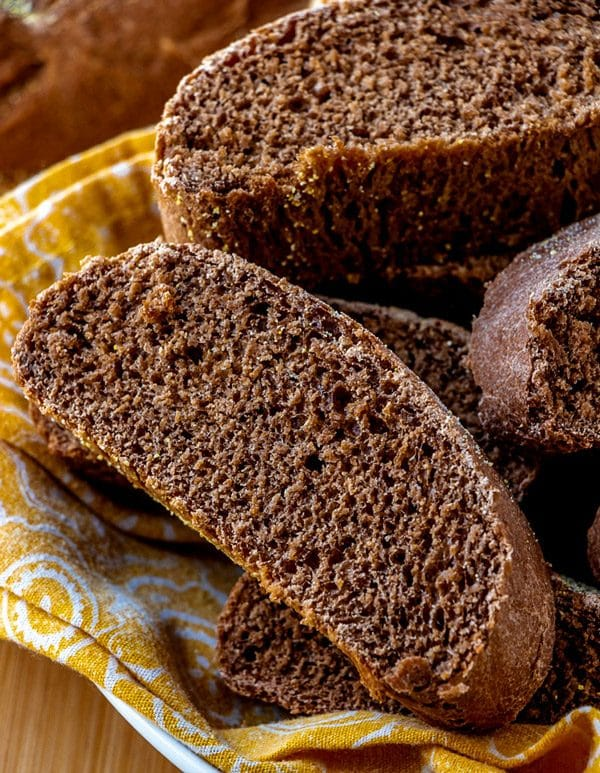

Honey Wheat Bushman Bread

Description
Have you ever heard of Outback Steakhouse? Well, you what it is? The best bangin' bon appetito bread in the whole wide world! The distinct flavored coupled by its down to earth chocolately flavor will make your drool!
Ingredients
- 1 ¼ cups warm water 105-110 degrees
- 2 teaspoons sugar
- 1 pkg active dry yeast (2 ¼ tsp bulk yeast)
- 2 cups bread flour
- 1 ¾ cups whole wheat flour
- 1 tablespoon cocoa powder
- 2 teaspoons instant coffee granules
- 1 teaspoon salt
- 2 tablespoons butter softened
- ¼ cup honey
- 2 tablespoons molasses
- ¼ cup Yellow cornmeal for dusting
Steps
- Proof the yeast: measure the warm water into a two-cup or larger measure. Add the sugar and yeast. Stir to dissolve. Within 5 minutes the yeast should have begun to bubble and grow.
- While the yeast proofs, mix the flours, cocoa, coffee, and salt in a large bowl. Stir together with a whisk.
- Using your fingers, mix the softened butter into the flour mixture.
- Make a well in the center of the dry mixture and add the honey, molasses, and yeast-water mixture. Stir from the middle, bringing the dry ingredients gradually into the wet. You can start out with a wooden spoon but will need to use your hands to finally bring the dough together.
- Turn the rough dough out onto a lightly floured surface. Knead for 10 minutes adding small amounts of flour to the kneading surface only if needed.
- Let the dough rest for a few minutes while you wash and dry the bowl that you used to mix it in. Spray the inside of the bowl with cooking spray.
- Put the dough into the bowl top side down and then turn it over so that the top is coated with a bit of the cooking spray.
- Cover the bowl with plastic wrap and set it in a warm place to rise. The interior of an oven with the light on is usually warm enough.
- Let the dough rise for 1 to 1 1/2 hours or until doubled in size.
- When the dough has doubled, cut it into 6 portions. Form each portion into either a 6-inch log shape or a round mini-boule.
- Pour a small amount of cornmeal onto your work surface. Moisten each dough portion very lightly by wetting your hands, removing most of the water and rubbing over the dough. Roll the lightly moistened loaves in cornmeal to coat. Gently pat to remove any excess cornmeal.
- Place the loaves on a lightly oiled baking sheet. Cover with plastic wrap and set aside to rise for another hour or until doubled in size.
- Preheat the oven to 350 degrees. Uncover the dough and bake for 35-40 minutes.
- Remove from the oven and allow to cool for 10 to 15 minutes.
- Serve with plenty of butter